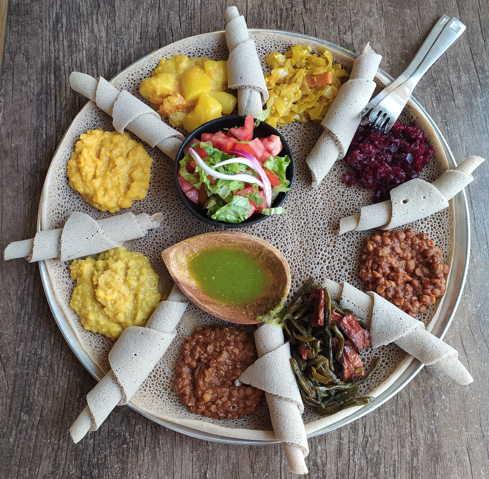
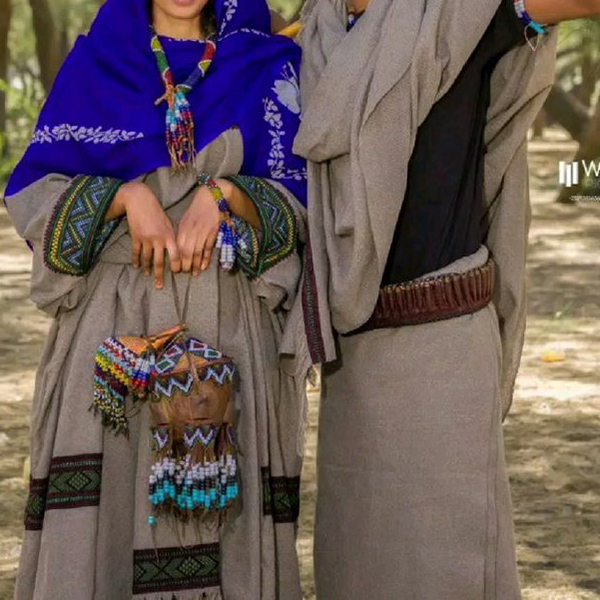

Traditional Ethiopian Food
Ethiopian food is famous for its unique flavors and traditional preparation. Injera is one of the most popular foods in Ethiopia. It is commonly served with different stews and vegetables.

Ethiopian Coffee Ceremony
Coffee has an important place in Ethiopian culture. The traditional coffee ceremony brings family members and guests together. Coffee is prepared and served using traditional equipment.

Traditional Festivals
Ethiopia celebrates many religious and cultural festivals throughout the year.
- Timkat - Ethiopian Epiphany celebration.
- Meskel - Finding of the True Cross celebration.
- Enkutatash - Ethiopian New Year.
- Genna - Ethiopian Christmas celebration.
Traditional Clothing
Ethiopian traditional clothing includes beautiful garments made from cotton. Habesha kemis is a traditional dress worn by women during different cultural and special occasions.

Experience Ethiopian Culture
Visitors can learn about Ethiopian traditions through food, music, dance, festivals and traditional ceremonies.